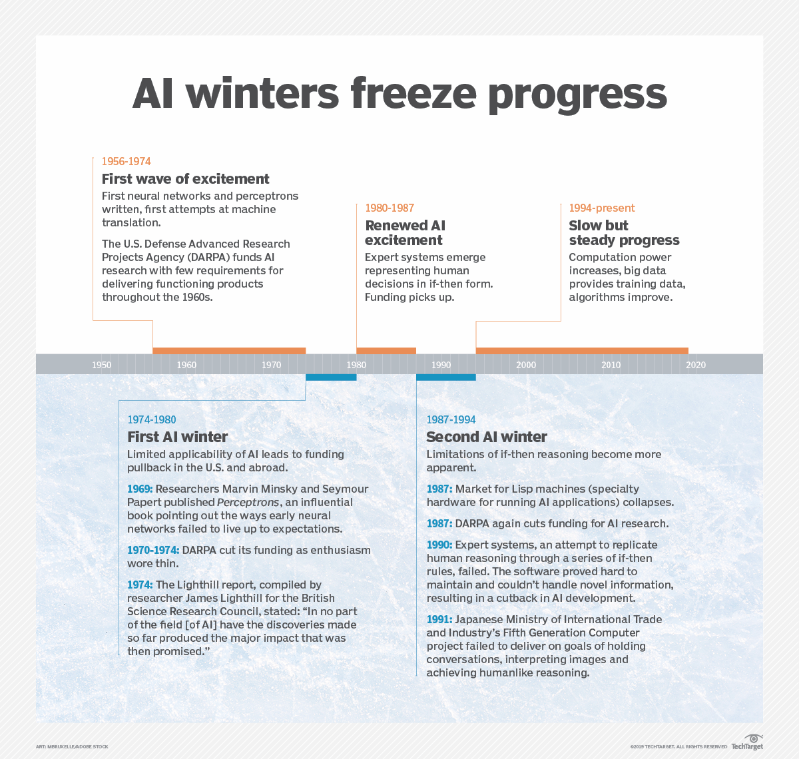

What is the history of AI?
The concept of inanimate objects endowed with intelligence has
been around since ancient
times. The
Greek god Hephaestus was depicted in myths as forging robot-like servants out
of gold. Engineers in
ancient Egypt built statues of gods animated by priests. Throughout the
centuries, thinkers from
Aristotle to the 13th century Spanish theologian Ramon Llull to René
Descartes and Thomas Bayes used
the tools and logic of their times to describe human
thought processes as symbols, laying the
foundation for AI concepts such as general
knowledge representation.
The late 19th and first half of the 20th centuries brought forth the foundational work that
would
give rise to the modern computer. In 1836, Cambridge University mathematician
Charles Babbage and
Augusta Ada Byron, Countess of Lovelace, invented the first design
for a programmable
machine.

1940s.
Princeton mathematician John Von Neumann
conceived
the architecture for the
stored-program
computer -- the idea that a computer's program and the data it processes
can be kept in the
computer's memory. And Warren McCulloch and Walter Pitts laid the
foundation for neural
networks.
1950s.
With the advent of modern computers, scientists
could test their ideas about machine
intelligence. One method for determining whether a computer has intelligence was devised
by the
British mathematician and World War II code-breaker Alan Turing. The Turing Test
focused on a
computer's ability to fool interrogators into believing its responses to their
questions were made
by a human being.
1956.
The modern field of artificial intelligence is
widely
cited as starting this year during a
summer conference at Dartmouth College. Sponsored by the Defense Advanced Research
Projects
Agency (DARPA), the conference was attended by 10 luminaries in the field,
including AI pioneers
Marvin Minsky, Oliver Selfridge and John McCarthy, who is credited
with coining the term artificial
intelligence. Also in attendance were Allen Newell, a computer
scientist, and Herbert A. Simon, an
economist, political scientist and cognitive psychologist,
who presented their groundbreaking Logic
Theorist, a computer program capable of proving
certain mathematical theorems and referred to as the
first AI program.
1950s and 1960s.
In the wake of the Dartmouth College
conference, leaders in the fledgling
field of
AI predicted that a man-made intelligence equivalent to the human brain was around
the corner,
attracting major government and industry support. Indeed, nearly 20 years of
well-funded basic
research generated significant advances in AI: For example, in the late
1950s, Newell and Simon
published the General Problem Solver (GPS) algorithm, which fell
short of solving complex problems
but laid the foundations for developing more sophisticated
cognitive architectures; McCarthy
developed Lisp, a language for AI programming that is still
used today. In the mid-1960s MIT
Professor Joseph Weizenbaum developed ELIZA, an early
natural language processing program that laid
the foundation for today's chatbots.
1970s and 1980s.
But the achievement of artificial
general
intelligence proved elusive, not
imminent, hampered by limitations in computer processing and memory and by the
complexity of the
problem. Government and corporations backed away from their support of
AI research, leading to a
fallow period lasting from 1974 to 1980 and known as the first
"AI Winter." In the 1980s, research
on deep learning techniques and industry's adoption of
Edward Feigenbaum's expert systems sparked a
new wave of AI enthusiasm, only to be
followed by another collapse of government funding and
industry support. The second AI
winter lasted until the mid-1990s.
1990s through today.
Increases in computational power
and
an explosion of data sparked
an AI
renaissance in the late 1990s that has continued to present times. The latest focus on
AI has given
rise to breakthroughs in natural language processing, computer vision, robotics,
machine learning,
deep learning and more. Moreover, AI is becoming ever more tangible,
powering cars, diagnosing
disease and cementing its role in popular culture. In 1997, IBM's
Deep Blue defeated Russian chess
grandmaster Garry Kasparov, becoming the first
computer program to beat a world chess champion.
Fourteen years later, IBM's Watson
captivated the public when it defeated two former champions on
the game show Jeopardy!.
More recently, the historic defeat of 18-time World Go champion Lee Sedol
by Google
DeepMind's AlphaGo stunned the Go community and marked a major milestone in the
development of intelligent machines.